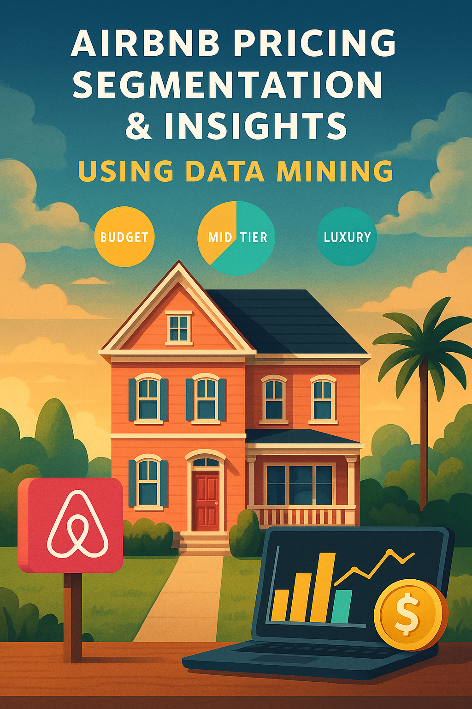

Aspiring technical analyst with interests in Data, Product, Business Analytics, and Data Storytelling.
Pursuing an M.S. in Analytics at the University of Southern California with expertise in Python, SQL, Tableau,
Machine learning, Excel, and product strategy. With prior experience in impactful research and projects,
I’m ready to deliver innovative solutions and drive technological growth in any organization.
Built an end to end training and inference pipelines for automating Machine Learning workflows for Predicting 30-Day Hospital Readmissions in Google Cloud Platform(VertexAI).
Did Exploratory Data analysis to identify patterns, trends, and key insights regarding layoffs across various industries, companies, and countries during 2020-2024, particularly focusing on the impact of the COVID-19 pandemic and subsequent economic shifts
Created an Interactive Tableau dashboard analyzing the impact of climate change on agriculture (1990–2024), featuring geospatial analysis, trend insights, and adaptation strategies across regions and crop types.
Performed detailed EDA of UberEats data using Python and created a Tableau dashboard to uncover customer behavior, pricing trends, and branch performance for actionable insights.

Applied statistical testing and machine learning techniques to uncover how property features and seasonal factors impact nightly pricing. Used explainable models and clustering to create practical pricing tiers for hosts and platforms
Built interpretable machine learning models using MIMIC-IV ICU data to predict 28-day mortality in SALI patients. Applied LassoCV, XGBoost, SHAP, and permutation importance to select top predictors and validate performance across eight classifiers, improving upon published benchmarks